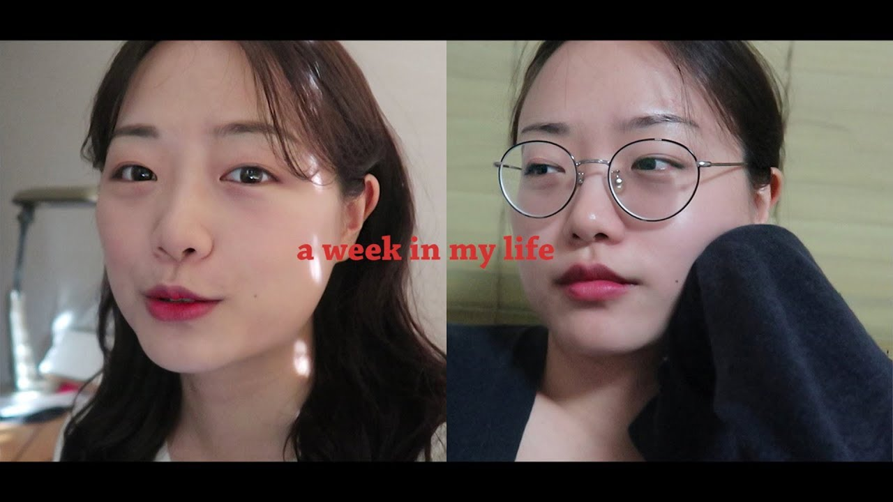

Nerin is a YouTube creator and college student with the Sandbox Network. She was finally accepted as a PD for a private company in October 2020. She announced the employment news through a video announcement of successful applicants. It produces calm and simple Vlog contents such as daily life, travel, and dating.
On June 3, 2017, she began her YouTube career with a solo travel vlog to Myanmar. Currently, she is famous as an international couple YouTuber, and videos of her traveling and dating with her boyfriend Bova are gaining popularity. In 2019, an article titled "Korean Girlfriend I Love You So Much" was posted on Insight under the title of "Handsome Russian Boyfriend Who Started Learning Korean," which became a hot topic, which led to a huge increase in subscribers. He was also asked by his Korean friends about what happened.